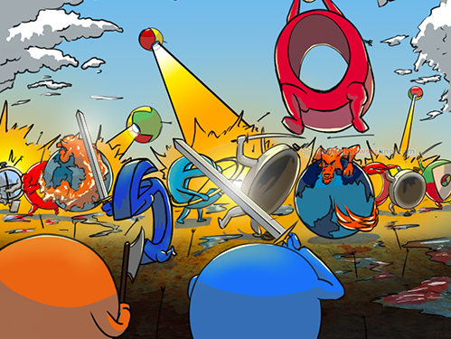

History of Internet
The invention of internet

The invention of the internet happened in a unique way as no one would have imagined. As the United States was in state of war and information was going to play vital role in it so the research and development wanted to build communications tools for them in that they found a way using computer networks in which they made a network from computer to computer i.e “network of networks". Though telephone systems were the best way of communication(In the 1960's) as when the phone numbers were called they were dedicated to a transmission line. But when the United States feared the soviet attack they fought they wouldn't be able to communicate through telephone systems once lines were destroyed. Then "Packet Switching" was applied for sending information from one computer network to another. Packet switching was used because data was divided into smaller blocks called packets, so that each packet can travel through different routes and reach its destination. Packets contain "Header" in which the destination was mentioned as no dedicated path was there. The Soviet Shock On October 4, 1957, the Soviet Union launched the world’s first manmade satellite into orbit. The satellite, known as Sputnik, did not do much: It relayed blips and bleeps from its radio transmitters as it circled the Earth. Still, to many Americans, the beach-ball-sized Sputnik was proof of something alarming: While the brightest scientists and engineers in the United States had been designing bigger cars and better television sets, it seemed, the Soviets had been focusing on less frivolous things—and they were going to win the Cold War because of it. After Sputnik’s launch, many Americans began to think more seriously about science and technology. Schools added courses on subjects like chemistry, physics and calculus. Corporations took government grants and invested them in scientific research and development. And the federal government itself formed new agencies, such as the National Aeronautics and Space Administration (NASA) and the Department of Defense’s Advanced Research Projects Agency (ARPA), to develop space-age technologies such as rockets, weapons and computers The Beginning of the ARPAnet Scientists and military experts were especially concerned about what might happen in the event of a Soviet attack on the nation’s telephone system which could destroy the whole network of lines and wires that made efficient long-distance communication possible. In 1962, a scientist from M.I.T. and ARPA named J.C.R. Licklider proposed a solution to this problem: a “galactic network” of computers that could talk to one another. Such a network would enable government leaders to communicate even if the Soviets destroyed the telephone system. In 1965, another M.I.T. scientist developed a way of sending information from one computer to another that he called “packet switching.” Packet switching breaks data down into blocks, or packets, before sending it to its destination. That way, each packet can take its own route from place to place. Many people were finding it difficult to use or search on the internet so Tim Berners-Lee invented software called the World Wide Web(WWW). WWW used hyperlinks to connect pages. Later user friendly software was introduced for surfing WWW called MOSAIC. MOSAIC had graphical advantage i.e texts, images, videos. After this the web grew significantly. In 1992, a group of students and researchers at the University of Illinois developed a sophisticated browser that they called Mosaic. Mosaic offered a user-friendly way to search the Web: It allowed users to see words and pictures on the same page for the first time and to navigate using scrollbars and clickable links. That same year, Congress decided that the Web could be used for commercial purposes. As a result, companies of all kinds hurried to set up websites of their own, and e-commerce entrepreneurs began to use the internet to sell goods directly to customers. More recently, social networking sites like Facebook have become a popular way for people of all ages to stay connected.
Browser Wars
The internet age began with a vicious power struggle- to decide who would control the future of the emerging internet. Initially the web was used only for a bunch of nerds and people of science and research. The public didn’t know about the internet till the mid 90’s. In 1993, NCSA MOSAIC browser was made by students from University of Illinois. It was made by Marc Andreesen and his college pals. This browser was free for download, but the only ones who used the internet at that time were scientists. Looking at this browser, Jim Clark (a well known personality in the silicon valley) was interested in founding this. Among Cello, Arena, Lynx, tkWWW, and Mosaic,the most influential of these was Mosaic, a multiplatform browser developed at National Center for Supercomputing Applications (NCSA). By October 1994, Mosaic was "well on its way to becoming the world's standard interface".By 1995, helped by the fact that it was free for non-commercial use, the browser dominated the emerging World Wide Web. Other browsers launched during 1994 included IBM Web Explorer, Navipress, SlipKnot, MacWeb, and Browse. In 1995, Netscape faced new competition from OmniWeb, WebRouser, UdiWWW, and Microsoft's Internet Explorer 1.0, but continued to dominate the market.
Internet Search

Earlier, we had to browse a lot of websites and check which website will give us the information we needed. Jerry Yang and david filo(electrical engineers). They had an idea(created yahoo).They had access to the web, so they used it to do research on basketball to win the Stanford fantasy basketball league. They created a directory that would list things out based on category. They wanted to go big with this and they launched yahoo, but they didn't have the money. Michael Moritz, a venture capitalist decided to pay a visit to these guys. Advertising split the early web community. They realised that if many people are gathered in the web then it's good for advertising. Jerry and david were confused whether they should use advertising to generate revenue, as they would lose users if ads came up. Late in 1995, they began taking these banner ads and waited. They realised that users were multiplying, and it had a large audience. Initially, Yahoo faced a rival initially called eXcite, it was a start up found by students from stanford, they used the web crawling technology, where the software lists sites for them by searching for the keywords in other websites. There was a lot of innovation going around that time, whatever features were launched by the other company was launched by them and vice versa.